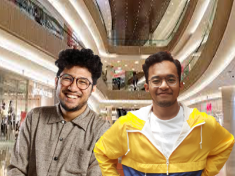

Holla! Nama saya Muhammad Faisal Rifqi, Biasanya teman teman memanggil saya Rifqi. Saat ini saya sedang mengenyam pendidikan dikelas 11-9 di sekolah SMK-SMAK BOGOR. Mau tau sekolah ke lebih lanjut? bisa cek disini ya!

dari kecil saya sudah senang membaca, sampai sekarang saya mempunyai koleksi buku dan novel sebanyak sekali, saking sukanya saya membaca, saya bahkan pernah menghabiskan 1 novel dengan 600 halaman dalam satu hari. selain membaca aku juga suka berenang, setidaknya 2x dalam seminggu saya berenang di kolam renang umum dekat rumah, saat berenang saya bisa menghabiskan ber jam jam untuk berenang.